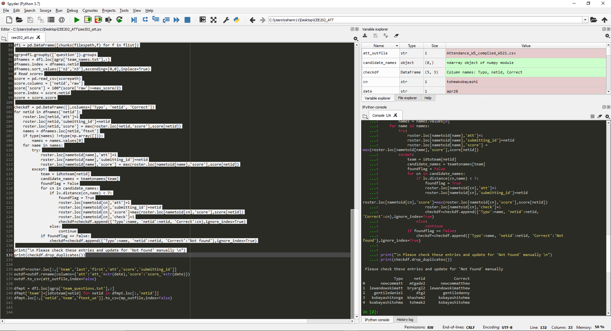
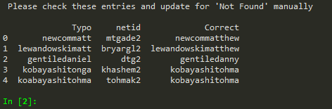

Attendance and muddiest point compilation¶
By Neetesh Sharma
Summary¶
This is simple python script, which is written to compile data collected by responses from the team based class attendance form and the muddiest point question. The script works with these specific questions and the way prairie learn output csv files look like. The code is hacky and not particularly clean or efficient but anyone with basic idea of file manipulation and scripting in python should be able to read and edit to make it work with different problems.
Description¶
In this section I will just go through the different parts of the script and give brief descriptions.
# -*- coding: utf-8 -*-
"""
Created on Tue Jan 28 14:41:03 2020
@author: nsharm11@illinois.edu
"""
import pandas as pd
import numpy as np
import glob
import Levenshtein as lv
Importing the libraries.
Pandasfor manipulating data in dataframes and input output of csv.Numpyfor some basic array functionsGlobto collect files from the student file submission directoryLevenshteinto calculate the string similarity with input student names and student names in roster to detect and correct spelling mistakes by students in filling their names
###########################
###### Inputs #############
###########################
rosterpath = "roster3-25-20.csv"
filespath = "Worksheet22/*.txt"
scorepath = "CEE_202_SPRING2020_WS22_scores_by_username.csv"
max_score = 0
att_outfile = "Attendance_WS_compiled_WS22.csv"
mp_outfile = "Muddiest_point_compiled_WS22.csv"
date = "apr30"
Now we move on to the inputs.
roster3-25-20.csvis the class roster with the following format:team,last,first,netid Team_1,Bellary,Amritha,abella8 Team_1,Barbieri,Giulia,gbarbier Team_1,Osei,Kweku,kosei2 Team_1,Wiggins,Robert,rjw5 Team_2,Nguyen,Chris,cnguye52 Team_2,Ambrosino,Jack,jackaa2 Team_2,Salam,Shaadmaan,sfsalam2
filespath is where the “best_files” from PL are located, as obtained from the downloads available on PL
scorepath is again a csv of scores by username as downloaded from PL
maxscore is the maximum score in the assessment from the above file (Note that in the current class policy
>=50%of the max score earns100points and zero otherwise)Then there are the preferred names of the outputs and the date of the worksheet being processed
# Read the roster and make all possible mapping dicts for convenience
roster=pd.read_csv(rosterpath)
roster['name']=(roster['last']+roster['first'])
roster['name1']=(roster['first']+roster['last'])
roster['name'] = [''.join(filter(str.isalnum, name)).lower().strip().replace(" ","") for name in roster['name']]
roster['name1'] = [''.join(filter(str.isalnum, name)).lower().strip().replace(" ","") for name in roster['name1']]
roster['att'] = 0
roster['score'] = 0
roster['submitting_id'] = ''
roster['check'] = 0
nametoid = {}
idtoname = {}
idtoteam = {}
for i in roster.index:
nametoid[roster.loc[i,'name']]= roster.loc[i,'netid']
nametoid[roster.loc[i,'name1']]= roster.loc[i,'netid']
idtoname[roster.loc[i,'netid']]= roster.loc[i,'name']
idtoteam[roster.loc[i,'netid']]= roster.loc[i,'team']
teams = roster.groupby('team').groups
teamtonames = {}
teamtoids = {}
for key in teams.keys():
teamtonames[key] = roster.loc[teams[key],['name','name1']].values.flatten()
teamtoids[key] = roster.loc[teams[key],'netid'].values
roster.index = roster.netid
We then process the roster and make mappings from id to name and name to id, id to team and team to multiple ids. These will be useful for processing the student inputs. Also, the processed roster dataframe serves as place to report the attendance and scores, and that is why I add numeric columns for 'att', 'score', 'submitting_id', and 'check' in the roster as place holders.
# Read submitted files and separate present team member names
flist = glob.glob(filespath)
df1 = pd.DataFrame([chunks(filespath,f) for f in flist])
qgrp=df1.groupby(['question']).groups
dfnames = df1.loc[qgrp['team_names.txt'],:]
dfnames.index = dfnames.netid
dfnames.sort_values(['n2','n3'],ascending=[0,0],inplace=True)
We then read the submitted files and and extract data from the filename as well as the text inside the files. The function chunks performs this procedure for each filename
def chunks(filespath,fname):
allchunks = fname.split('\\')[-1]
allchunks = allchunks.split('_')
semail = allchunks[0]
## CHange teh number to extract netid
netid = semail.split('@')[0]
if allchunks[5]=='File':
qname = allchunks[-2]+'_'+allchunks[-1]
n1 = int(allchunks[1])
n2 = int(allchunks[7])
n3 = int(allchunks[8])
else:
qname = allchunks[-2]+'_'+allchunks[-1]
n1 = int(allchunks[1])
n2 = int(allchunks[7])
n3 = int(allchunks[8])
with open(fname,"r") as file1:
ftxt = file1.read()
return {
'netid':netid,
'question':qname,
'n1':n1,
'n2':n2,
'n3':n3,
'ftext': np.array(''.join(filter(str.isalnum, ftxt.strip().replace('\n', 'zzz').replace('\r', 'zzz').replace(', ', '').replace(' ', '').lower())).split('zzz')),
'ftext_ue': ftxt}
This function is the piece which would need editing if the code is to be applied to a different problem, since chunks relies on the position of different type of information at different location inside the filename.
# Read scores
score = pd.read_csv(scorepath)
score.columns = ['netid','raw']
score['score'] = 100*(score['raw']>=max_score/2)
score.index = score.netid
score = score.score
We then read the score file as well and create a id to score map.
checkdf = pd.DataFrame([],columns=['Typo', 'netid', 'Correct'])
for netid in dfnames['netid']:
roster.loc[netid,'att']=1
roster.loc[netid,'submitting_id']=netid
roster.loc[netid,'score'] = max(roster.loc[netid,'score'],score[netid])
names = dfnames.loc[netid,'ftext']
if type(names) !=type(np.array([])):
names = names.values[0]
for name in names:
try:
roster.loc[nametoid[name],'att']=1
roster.loc[nametoid[name],'submitting_id']=netid
roster.loc[nametoid[name],'score'] = max(roster.loc[nametoid[name],'score'],score[netid])
except:
team = idtoteam[netid]
candidate_names = teamtonames[team]
foundflag = False
for cn in candidate_names:
if lv.distance(cn,name) < 7:
foundflag = True
roster.loc[nametoid[cn],'att']=1
roster.loc[nametoid[cn],'submitting_id']=netid
roster.loc[nametoid[cn],'score']=max(roster.loc[nametoid[cn],'score'],score[netid])
roster.loc[nametoid[cn],'check']=1
checkdf=checkdf.append({'Typo':name, 'netid':netid, 'Correct':cn},ignore_index=True)
else:
continue
if foundflag == False:
checkdf=checkdf.append({'Typo':name, 'netid':netid, 'Correct':'Not found'},ignore_index=True)
This part of code now gives the attendance to the students listed inside the present team members portion. We first give attendance to the submitting id, we then try to map name to ids using the roster data and if no name to id is found we try to compare with the available ones using the string comparison and try to make corrections. If no correction is found within the search distance, "not found" is reported. We keep track of all the correction we made in a checkdf dataframe.
print("\n Please check these entries and update for 'Not Found' manually \n")
print(checkdf.drop_duplicates())
outdf=roster.loc[:,['team','last','first','att','score','submitting_id']]
outdf=outdf.rename(columns={'att':'att_'+str(date),'score':'score_'+str(date)})
outdf.to_csv(att_outfile,index=False)
dfmpt = df1.loc[qgrp['team_questions.txt'],:]
dfmpt['team']=[idtoteam[netid] for netid in dfmpt.loc[:,'netid']]
dfmpt.loc[:,['netid','team','ftext_ue']].to_csv(mp_outfile,index=False)
We then print the corrections we made for a manual check, and then write the output files.
Running the code¶
Use a GUI such as spyder to run the script. Make sure you are in the relevant working directory and files are in place according to the paths you define in the inputs.
Fill in all the inputs and run the code upto the print out of the checkdf.

Carefully check the printed corrections

If there are some not founds or something the script got wrong, we need to edit the files submitted by the identified student id manually.
Finally run the code for outputs and processing is done.